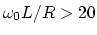
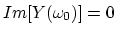
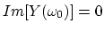
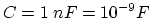
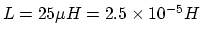
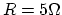
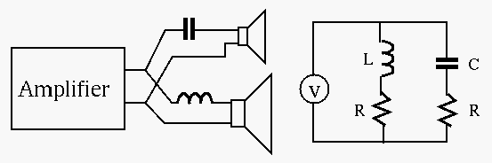

Assuming , give the expression of the resonant frequency at which the admittance of the circuit will be minimized.
Hint: Unlike pure series and parallel RCL circuits, for this mixed RCL
circuit, both the real and imaginary parts of its admittance are a function
of  . However, if the quality factor of the inductor is large enough,
i.e.,
. However, if the quality factor of the inductor is large enough,
i.e.,
 , we can still assume at the resonant frequency,
the imaginary part of the admittance is zero
.
, we can still assume at the resonant frequency,
the imaginary part of the admittance is zero
.
Next, assume , , and , confirm the assumption is valid, and find the resonant frequency.
